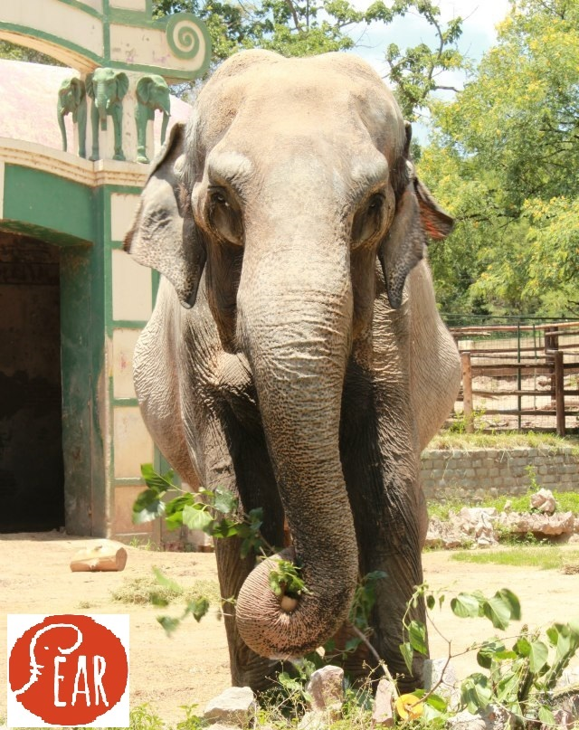
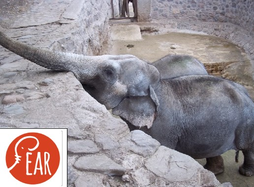
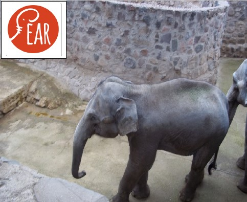
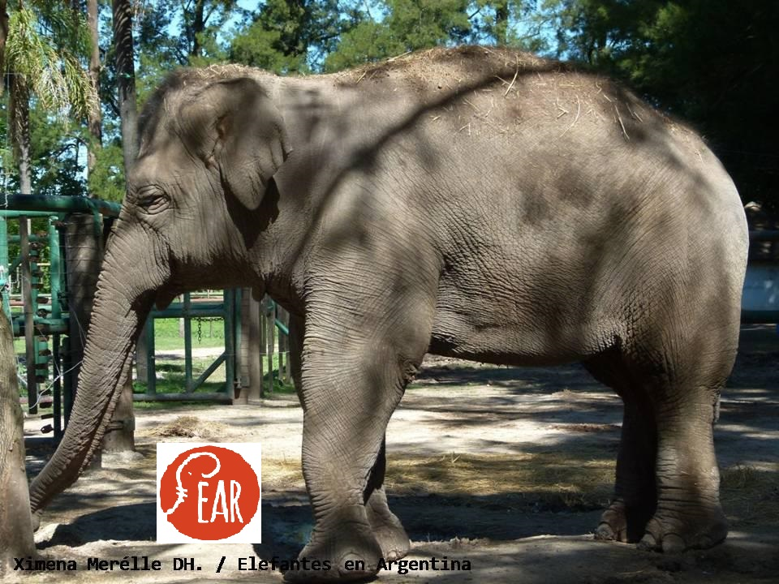

Zoológico de La Plata
Avenida 52 y 118 S/N, BS AS.
Pelusa (Elephas maximus)
Sexo:
Edad : 49 años
Procedencia: Zoológico de Alemania

Zoológico de Buenos Aires
República de la India 3000, Ciudad autónoma de Bs. As
Web: http://www.zoobuenosaires.com.ar/
Mara (Elephas maximus)
Sexo:
Edad : 46 años
Procedencia: Circo Rodas

Kuky (Loxodonta africana)
Sexo:
Edad : 25 años
Procedencia: Parque Nacional Etosha (Namibia)

Pupy (Loxodonta africana)
Sexo:
Edad : 25 años
Procedencia: Parque Nacional Etosha (Namibia)

Zoológico de Córdoba
Rondeau 798, Córdoba
Web: http://www.zoo-cordoba.com.ar/
Taruca (Elephas maximus)
Sexo:
Edad : aprox. 73 años - fallecida en 2013
Procedencia: Orlando Orfei
Vivió los últimos 21 años en el zoológico de Córdoba
Zoológico de Mendoza
Av Libertador s/n- Parque General San Martín, Mendoza, Argentina
Web: http://www.zoo.mendoza.gov.ar/
Pocha (Elephas maximus)
Sexo:
Edad : 48 años
Tamy (Elephas maximus)
Sexo:
Edad : 34 años
Procedencia: Circo Gasca

Guillermina (Elephas maximus)
Sexo:
Edad : 15 años
Procedencia: nació en el zoo, es hija de Pocha y Tamy
Kenya (Loxodonta africana)
Sexo:
Edad : 34 años
Procedencia: Alemania

Zoológico de Luján
Acceso Oeste Km 58, Luján, Buenos Aires- Argentina
Arly (Elephas maximus sumatrensis)
Sexo:
Edad : 19 años, 1996- 2015 - fallecida
Procedencia: Zoológico de Ragunan, Indonesia

Sharima (Elephas maximus sumatrensis)
Sexo:
Edad : 20 años
Procedencia: Zoológico de Ragunan, Indonesia
El Arca de Enrimir
Ruta Nac 015 Acceso Represa Salto Grande- Concordia, Entre Ríos
Merry (Elephas maximus)
Sexo:
Edad : 47 años
Procedencia: trabajó en el circo de los Hermanos Tejedor